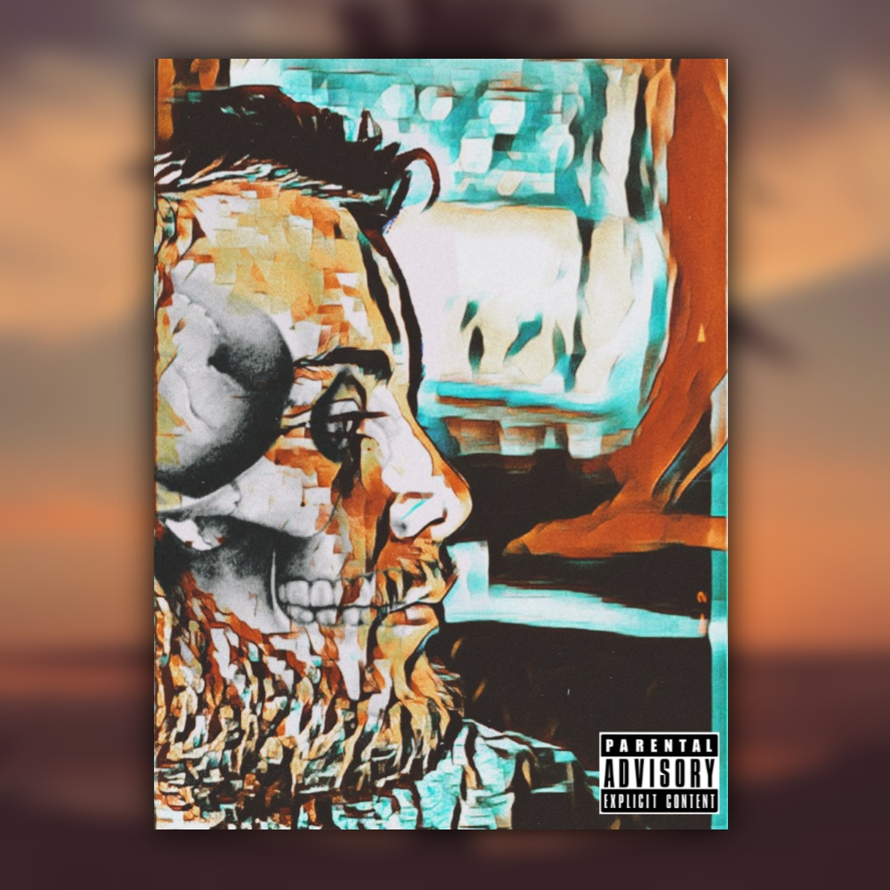

Közösségi oldalak ahol megtalálsz

|  |
Rólam
A nevem Leskó Árpád.
2003.december 31.-én születtem Ukrajnában
Anyanyelvem magyar, magyar családban nőttem fel.
tanulmányaimat a Beregszászi 4. számú Kossuth Lajos Középisolában kezdtem,
itt kezdtem érdeklődni az informatika és az angol nyelv iránt. |

továbbiakért látogass el erre a linkre
E-mail : leskoa47@gmail.com
Tel.: +36209514177